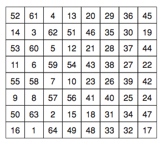
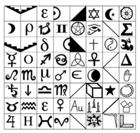

106. BÖLÜM
Rampadan hızla yukarı çıkıp çelik kapıyı açan Mal’akh, tablonun içinden geçerek yeniden oturma odasına girdi. Üzerinde hâlâ sadece ipek peştamalı vardı. Hemen hazırlanmam gerek. Antredeki ölü CIA ajanına bir göz attı. Bu ev artık güvenli değil.
Taş piramidi tek eliyle taşıyan Mal’akh, doğruca birinci kattaki çalışma odasına gidip, dizüstü bilgisayarının başına oturdu. Giriş yaparken, aşağıdaki Langdon’ı hayal etti. Gizli bodrumda suyun altındaki cesedinin bulunmasının kaç gün ya da hafta süreceğini merak etti. Mal’akh o zamana kadar çoktan gitmiş olacaktı.
Langdon rolünü oynadı... ustalıkla.
Langdon, Mason Piramidi’nin parçalarını tekrar bir araya getirmekle kalmamış, tabanındaki sembollerden oluşan esrarlı tabloyu da çözmenin bir yolunu bulmuştu. İlk bakışta semboller deşifre edilemez gibi görünüyordu ama cevabı basitti... tam karşısında duruyordu.
Mal’akh’ın bilgisayarı açılırken, ekranında daha önce aldığı e-posta yeniden belirdi. Warren Bellamy’nin parmağı tarafından kısmen kapatılan parlak kapak taşının fotoğrafı.
Sır
Düzen’in içinde gizli
Franklin Meydanı
Katherine, Mal’akh’a, Sekiz... Franklin Meydanı, demişti. Ayrıca ajanların onu yakalamak umuduyla Franklin Meydanı’nda beklediğini itiraf etmiş ve kapak taşındaki Düzen kelimesiyle neyin kastedildiğini açıklamıştı. Masonlar mı? Shriners mı? Gül Haçlılar mı?
Mal’akh artık bunlardan hiçbiri olmadığını biliyordu. Langdon gerçeği buldu.
On dakika önce, sular yüzüne doğru yükselirken Harvard’lı profesör, piramidi çözen anahtarı bulmuştu. Gözlerinde dehşetle, “Sekizinci Dereceden Franklin Karesi!” diye bağırmıştı. “Sır, Sekizinci Dereceden Franklin Karesi’nde gizli!”
Mal’akh ilk başta bunun anlamını kavrayamamıştı.
Ağzı pleksiglas pencereye yaslanmış olan Langdon, “Bu bir adres değil!” diye bağırmıştı. “Sekizinci Dereceden Franklin Karesi! Bu bir sihirli kare!” Ardından, Albrecht Dürer’le ilgili bir şey... ve son şifreyi çözmekte piramidin ilk şifresinin nasıl ipucu oluşturduğunu söylemişti.
Mal’akh sihirli karelere aşinaydı, ilk gizemciler onlara kameas diyorlardı. De Occulta Philosophia(1) isimli antik metin, sihirli karelerin esrarengiz gizemlerini ve sihirli sayı karelerine dayanarak nasıl güçlü mühürler oluşturulacağını anlatıyordu. Langdon, ona piramidin tabanındaki şifreyi çözmenin anahtarının sihirli bir kare olduğunu mu söylemişti?
“Sekize sekizlik bir kareyi bulman gerekiyor!” diye bağıran profesörün, vücudunun suyun üstünde kalan tek kısmı dudaklarıydı. “Sihirli kareler derecelerle sınışandırılır! Üçe üçlük bir kare ‘üçüncü derecedir’! Dörde dörtlük bir kare ‘dördüncü derecedir’! Senin ‘sekizinci dereceye’ ihtiyacın var!”
Sular Langdon’ı tamamen yutmak üzereyken, profesör çaresizce nefes alıp, ünlü bir mason hakkında bir şeyler bağırdı... Amerika’nın kurucularından... bir bilim adamı, gizemci, matematikçi, mucit... ve kendi ismini taşıyan esrarengiz kamea’nın yaratıcısı.
Franklin.
Mal’akh o anda Langdon’ın haklı olduğunu anlamıştı.
Heyecandan nefessiz kalan Mal’akh şimdi yukarıda, dizüstü bilgisayarının başında oturuyordu. İnternette hızlı bir arama yapınca, karşısına çıkan düzinelerce sonuçtan birini seçip okumaya başladı.
SEKİZİNCİ DERECEDEN FRANKLIN KARESİ
Tarihin en iyi bilinen sihirli karelerinden biri de 1769’da, Amerikalı bilim adamı Benjamin Franklin tarafından yayımlanan sekizinci dereceden karedir. Daha önce hiç görülmemiş “diyagonal toplamları” nedeniyle ünlü olmuştur. Franklin’in bu gizemli sanat biçimine olan tutkusu, zamanının önde gelen simyacıları ve gizemcileriyle kurduğu yakın ilişkilerden kaynaklanmış olabilir. Ayrıca, Fakir Richard’ın Almanak’ı71 isimli eserindeki kehanetlerin temellerini oluşturan, astrolojiye duyduğu inanç da etken sayılabilir.

Mal’akh, Franklin’in her satır, sütun ve köşelerdeki sayılar toplamı aynı sihirli sabit sayıyı veren ünlü yapıtını -1’den 64’e kadar sayıların benzer dizilişi- inceledi. Sır Sekizinci Dereceden Franklin Karesi’nde gizli.
Mal’akh gülümsedi. Heyecanla titrerken, taş piramidi eline alıp, tabanını inceledi.

Altmış dört sembolün farklı bir düzende yeniden dizilip yerleştirilmesi gerekiyordu. Sıralarını Franklin’in sihirli karesindeki sayılar belirleyecekti. Sembollerden oluşan bu karmakarışık tablonun, farklı bir düzene girince bir anda nasıl anlam kazanacağına akıl erdiremese de verilmiş eski söze güveni vardı.
Ordo ab chao.
Kalbi hızla çarparken, kalem kâğıt çıkarıp çabucak sekize sekizlik bir kare çizdi. Ardından, sembolleri yeni tanımlanan pozisyonlarına göre tek tek yerleştirmeye başladı. Tablonun hemen o anda anlam kazanmaya başladığını görmek onu şaşırttı.
Karmaşadan çıkan düzen!
Deşifre etmeyi tamamen bitirince, önünde duran çözüme şaşkınlık içinde baktı. Sade bir resim, şekil almış, karışık tablo dönüşmüştü... yeniden düzenlenmişti... Mal’akh tüm mesajın manasını anlayamasa da, çözdüğü kadarı ona yetiyordu. Bundan sonra nereye gideceğini biliyordu.
Piramit yolu gösteriyor.
Kare, dünyanın en gizemli yerlerinden birini işaret ediyordu. İnanılmaz bir biçimde, Mal’akh yolculuğunu hep bu noktada tamamlayacağını hayal etmişti.
Kader.
71 Poor Richard’s Almanack